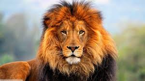
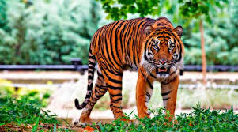
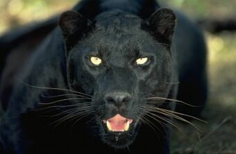
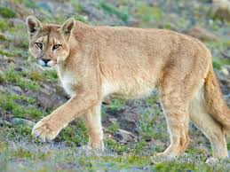

| NUMERO | NOMBRE DE ANIMAL | DESCRIPCION | LUGAR DONDE VIVE | FOTO DEL ANIMAL |
| 1 | LEON | TRANQUILO ES UN GRAN CASADOR | AFRICA-SABANA |  |
| 2 | TIGRE | ES UN CAZADOR SILENCIOSO Y EXELENTE | INDIA-NEPAL |  |
| 3 | PANTERA NEGRA | ES UN CAZADOR NATO Y MUY FACIL DE VER POR SU PELAJE | SELVA TROPICAL-AMERICA |  |
| 4 | PUMA | ES EL CAZADOR MAS SILENCIOSO QUE HAY EN LA TIERRA | SE EXTIENDE DESDE EL YUKON, EN CANADA, HASTA EL SUR DE LA CORDILLERA DE LOS ANDES Y LA PATAGONIA EN AMERICA DEL SUR. |  |
| 5 | gato | es felino mas domestico de la tierra | es un felino domestico pero luego deja salir a pulso su instinto que tiene con sus familiares cercanos |